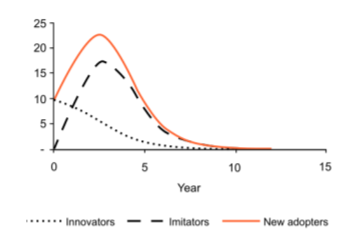
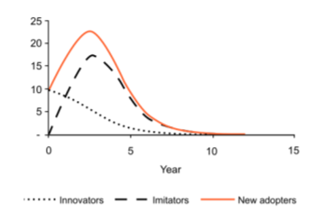

Analyse Data to Generate Actionable Insights and Value
The boxes below provide a very brief outline of some of the types of analysis we can perform. For examples of projects we have completed click on the links in the project portfolio section of this page
Machine learning techniques
Machine learning is the process of using mathematical models of data to help a computer learn without direct instruction. This enables a computer system to continue learning and improving on its own, based on experience. Machine learning covers a wide variety of techniques that can support a range of different requirements.
- Optimization and decision models to identify the optimum solution given known behaviors and constraints.
- Parameter fitting to fit known behavior pattern.
- Inference and predictions discovering cause-and-effect relationships in data
- Recommendation engines use data analysis to recommend products that someone might be interested in
- Clustering and classification
- Building networks / graphs to map relationships (geo-spatial / social)
- Time series analysis to predict future events given the past
All of which can be performed with statistical confidence levels.
Deep learning techniques
Some discussion
- Processing of unstructured data (Images / sound text) to perform classification and even develop generative algorithms.
- Speech recognition enables a computer system to identify words in spoken language, and natural language understanding recognises meaning in written or spoken language and identify and categorise positive, neutral and negative sentiment in text.
- Reinforcement learning to mimic human learning through trial and error by allowing the system to take a variety of actions in a defined environment in order to maximise cumulative reward.. behaviors based on reward
All of which can be performed with statistical confidence levels.
Project Portfolio
Aircraft prognostics
Royalty forecasting
Sentiment Analysis
 
